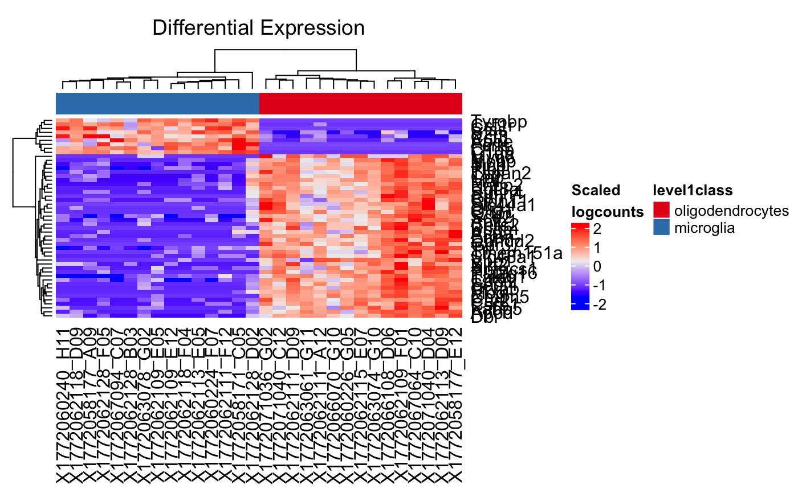

Plot Differential Expression
plotDiffEx(
inSCE,
useAssay = "logcounts",
condition,
geneList,
clusterRow = TRUE,
clusterCol = TRUE,
displayRowLabels = TRUE,
displayColumnLabels = TRUE,
displayRowDendrograms = TRUE,
displayColumnDendrograms = TRUE,
annotationColors = NULL,
scaleExpression = TRUE,
columnTitle = "Differential Expression"
)Input data object that contains the data to be plotted. Required
Indicate which assay to use. Default is "logcounts"
The condition used for plotting the heatmap. Required
The list of genes to put in the heatmap. Required
Cluster the rows. The default is TRUE
Cluster the columns. The default is TRUE
Display the row labels on the heatmap. The default is TRUE.
Display the column labels on the heatmap. The default is TRUE
Display the row dendrograms on the heatmap. The default is TRUE
Display the column dendrograms on the heatmap. The default is TRUE.
Set of annotation colors for color bar. If null, no color bar is shown. default is NULL.
Row scale the heatmap values. The default is TRUE.
Title to be displayed at top of heatmap.
ComplexHeatmap object for the provided geneList annotated with the condition.
data("mouseBrainSubsetSCE")
res <- scDiffEx(mouseBrainSubsetSCE,
useAssay = "logcounts",
"level1class",
diffexmethod = "limma")
#> Warning: Zero sample variances detected, have been offset away from zero
#> Removing intercept from test coefficients
plotDiffEx(mouseBrainSubsetSCE, condition = "level1class",
geneList = rownames(res)[1:50], annotationColors = "auto")
